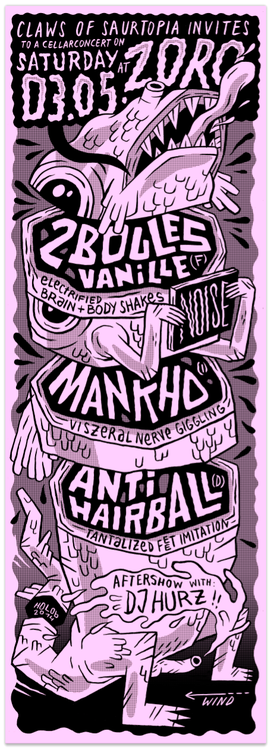

Samstag, den 3.5. im Zoro - Keller

Samstag, den 3.5. im Zoro - Keller
2 BOULES VANILLE (f) – electrified brain & body shakes
// Zutaten: 1 Vanilleschote, 500 ml Sojasahne, 100 g Zucker // Zubereitung: Mark einer Vanilleschote auskratzen //
Sojasahne mit Mark in Topf // Zucker dazu // aufkochen // alles in Schüssel // im Wasserbad schaumig aufschlagen //
Schüssel in kaltes Wasser setzen // weiterschlagen bis handwarm // im Kühlschrank abkühlen lassen // im Eisfach
gefrieren lassen // Lecken //
MANKHO (i) – viszeral nerve giggling
// siehe Nestor Iwanowitsch Makhno // geb. 26. Oktoberjul./ 7. November 1888greg. in Huljajpole // † 6. Juli 1934 in Paris // ukrainischer Anarchist // russischer Bürgerkrieg 1917 -
1923 // Anführer der nach ihm benannten Machnowschtschina = anarchistische
Volksbewegung der Ukraine //
ANTIHAIRBALL (d) – tantalized feet irritation
// Zusammenballung von Haaren im Magen der Katze (Trichobezoare) // kommen naturgemäß vor // Katze verschluckt
beim Putzen lose Haare // Formung zu Haarballen im Magen // oftmals wieder hervorgewürgt // Antihairball reduziert
die Bildung von Haarballen // mit knuspriger Hülle und einem unwiderstehlichen, saftigen Kern // Fleischig leckerer
Katzensnack mit funktionalem Nutzen //
antihairball.bandcamp.com
Aftershow with Dj Hurz! - New Wave, Postpunk, SynthPop